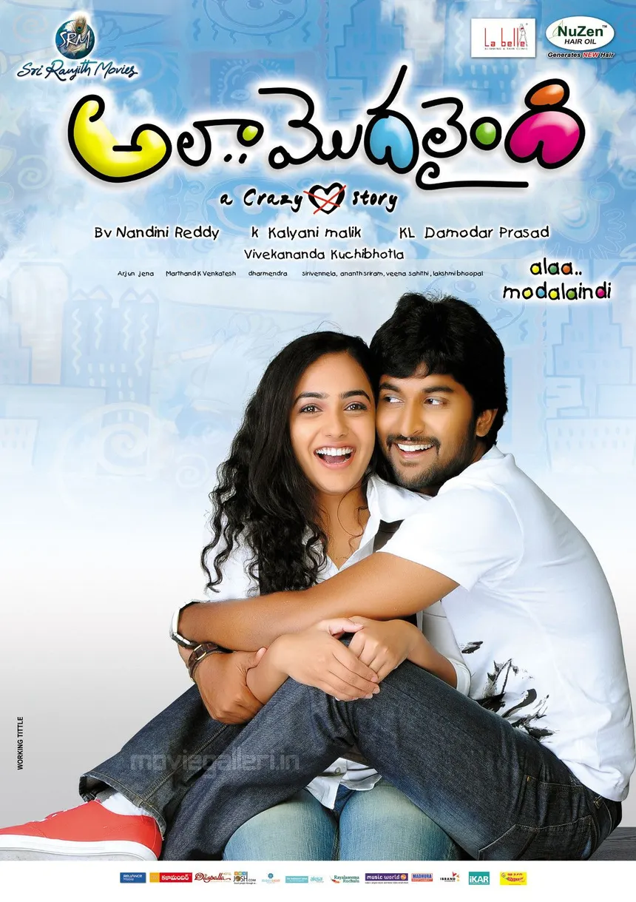

The person behind the picks
About Me
Jay
Welcome to my little corner.
A little cinema, a few good books, and stories worth keeping. Collecting the things that make an ordinary day feel a little more special.
- Movie lover
- Reader
- Storyteller
Posts
Notes & little favouritesJay
Sample post · Movie journalSome films feel like coming home.
There is something about a familiar film. You know the next scene, remember the music, and still find yourself smiling at all the same little moments.
Read moreShow less
From the movie shelf · Bommarillu
Jay
Sample post · Photo collectionA few frames worth keeping.
Different films, different moods. A small collection of colours, faces, and stories for a slow evening.
Read moreShow less

Three films, a little inspiration.
Jay
Sample post · A small thoughtMaking room for a good story.
Not every free moment needs a plan. Sometimes a few pages, a quiet room, and a story you have never heard before are more than enough.
Read moreShow less
Jay
Sample post · Double featureTwo picks for a quiet weekend.
A familiar favourite and something to rediscover. Sometimes choosing what to watch is half the fun.
Read moreShow less
A little weekend watchlist.